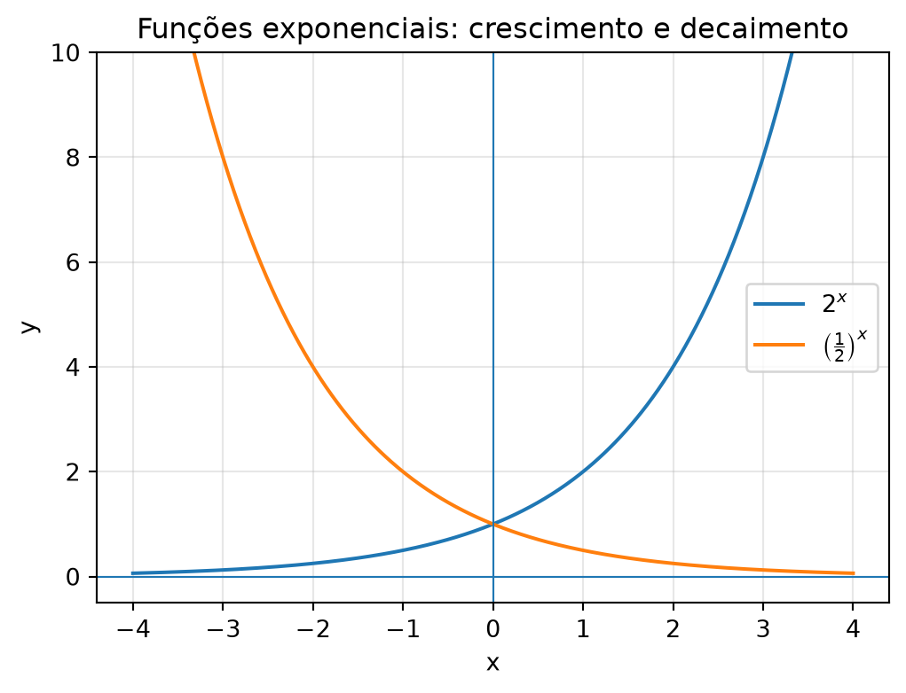
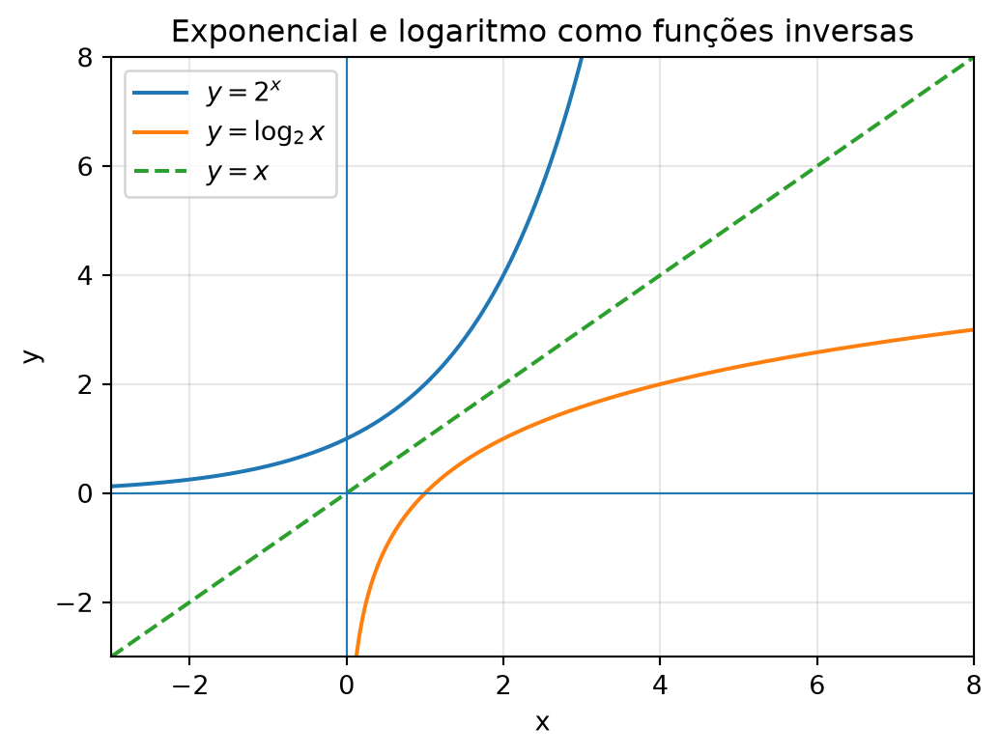

📘 Módulo 1.8: Exponenciais e Logaritmos
cálculo
matemática
curso
funções
exponenciais
logaritmos
Estudo das funções exponenciais e logarítmicas, suas propriedades, domínios, gráficos e aplicações iniciais no Cálculo.
🏠 ← Sumário do Curso · ← Cursos de Matemática · ← Seção de Matemática
🎯 Post Anterior: 👉 1.7 Funções Polinomiais e Racionais
1 📘 Exponenciais e Logaritmos
As funções exponenciais e logarítmicas estão entre as funções mais importantes do Cálculo.
Elas aparecem em crescimento populacional, juros compostos, decaimento radioativo, escalas de medida, algoritmos, equações diferenciais, estatística, física e computação.
A ideia central é simples:
- uma função exponencial coloca a variável no expoente;
- uma função logarítmica responde qual expoente produz determinado número.
Por exemplo, se
\[ 2^3=8, \]
então
\[ \log_2 8=3. \]
A exponencial e o logaritmo são operações inversas.
Dica❓ Pergunta Disparadora
Como descrever matematicamente fenômenos que crescem ou diminuem por multiplicação constante, e como descobrir o expoente escondido em uma potência?
Nota📌 Objetivos do Post
Ao final deste post, você deve ser capaz de:
- reconhecer funções exponenciais e logarítmicas;
- interpretar a relação inversa entre exponencial e logaritmo;
- identificar domínio e imagem dessas funções;
- usar propriedades básicas dos logaritmos;
- compreender modelos simples de crescimento e decaimento exponencial;
- perceber por que \(e^x\) e \(\ln x\) são funções centrais no Cálculo.
1.1 ✨ Potências e crescimento multiplicativo
Antes de definir funções exponenciais, vale lembrar a ideia de potência.
Quando escrevemos
\[ 2^5, \]
queremos dizer
\[ 2^5=2\cdot 2\cdot 2\cdot 2\cdot 2=32. \]
Em uma potência
\[ a^n, \]
o número \(a\) é a base e \(n\) é o expoente.
As potências aparecem naturalmente em processos multiplicativos. Por exemplo, se uma quantidade dobra a cada etapa, temos:
\[ 1,\ 2,\ 4,\ 8,\ 16,\ 32,\ldots \]
Essa sequência pode ser descrita por
\[ 2^n. \]
Enquanto funções afins representam crescimento por soma constante, funções exponenciais representam crescimento por multiplicação constante.
1.2 📈 Função exponencial
Uma função exponencial básica tem a forma
\[ \boxed{ f(x)=a^x,\qquad a>0,\quad a\neq 1 } \]
A condição \(a>0\) garante que a função esteja bem definida para todos os valores reais de \(x\). A condição \(a\neq 1\) evita o caso constante
\[ 1^x=1. \]
Exemplos:
\[ f(x)=2^x, \]
\[ g(x)=3^x, \]
\[ h(x)=\left(\frac{1}{2}\right)^x. \]
Se \(a>1\), a função é crescente. Se \(0<a<1\), a função é decrescente.
1.3 🔢 Exemplos de valores
Considere
\[ f(x)=2^x. \]
Temos:
\[ f(0)=2^0=1, \]
\[ f(1)=2^1=2, \]
\[ f(2)=2^2=4, \]
\[ f(3)=2^3=8. \]
Também podemos calcular valores com expoentes negativos:
\[ f(-1)=2^{-1}=\frac{1}{2}, \]
\[ f(-2)=2^{-2}=\frac{1}{4}. \]
Isso mostra que a função \(2^x\) cresce rapidamente quando \(x\) aumenta e se aproxima de zero quando \(x\) vai para \(-\infty\).
1.4 🧭 Domínio e imagem da exponencial
Para
\[ f(x)=a^x, \]
com \(a>0\) e \(a\neq 1\), o domínio é
\[ D_f=\mathbb{R}. \]
A imagem é
\[ \operatorname{Im}(f)=(0,+\infty). \]
Isso significa que a exponencial nunca assume valor zero nem valores negativos.
Mesmo quando \(x\) é muito negativo, \(a^x\) continua positivo. Por exemplo,
\[ 2^{-10}=\frac{1}{1024}. \]
É um número pequeno, mas ainda positivo.
1.5 📊 Visualizando funções exponenciais
O gráfico ajuda a comparar dois comportamentos importantes:
- se \(a>1\), a função \(a^x\) é crescente;
- se \(0<a<1\), a função \(a^x\) é decrescente.
DicaClique para ver o código
import os
import numpy as np
import matplotlib.pyplot as plt
os.makedirs("images", exist_ok=True)
x = np.linspace(-4, 4, 400)
plt.figure(figsize=(6, 4.2))
plt.plot(x, 2**x, label=r"$2^x$")
plt.plot(x, (1/2)**x, label=r"$\left(\frac{1}{2}\right)^x$")
plt.axhline(0, linewidth=0.8)
plt.axvline(0, linewidth=0.8)
plt.ylim(-0.5, 10)
plt.xlabel("x")
plt.ylabel("y")
plt.title("Funções exponenciais: crescimento e decaimento")
plt.legend()
plt.grid(True, alpha=0.3)
plt.savefig("images/1-8-exponenciais-crescimento-decaimento.png", dpi=300, bbox_inches="tight")
plt.show()1.6 🌿 A base natural \(e\)
Entre todas as funções exponenciais, uma delas é especialmente importante:
\[ \boxed{f(x)=e^x} \]
O número \(e\) é aproximadamente
\[ e\approx 2{,}71828. \]
Ele aparece naturalmente em processos de crescimento contínuo. No Cálculo, a função \(e^x\) tem uma propriedade extraordinária:
\[ \frac{d}{dx}e^x=e^x. \]
Isto é, a derivada de \(e^x\) é a própria função \(e^x\).
Ainda não vamos demonstrar esse fato. Por enquanto, o importante é reconhecer que \(e^x\) será uma das protagonistas do curso.
Nota💡 Ideia importante
A função exponencial natural \(e^x\) é a exponencial mais adequada para descrever crescimento contínuo.
1.7 🔁 Logaritmos
O logaritmo é a operação inversa da exponenciação.
A definição pode ser escrita de forma compacta como
\[ \boxed{\log_a x=y \quad \Longleftrightarrow \quad a^y=x} \]
Lemos:
o logaritmo de \(x\) na base \(a\) é o expoente ao qual devemos elevar \(a\) para obter \(x\).
Por exemplo:
\[ 2^3=8 \]
equivale a
\[ \log_2 8=3. \]
Outro exemplo:
\[ 10^2=100 \]
equivale a
\[ \log_{10}100=2. \]
1.8 🧭 Domínio da função logarítmica
A função logarítmica
\[ f(x)=\log_a x \]
é definida para
\[ x>0, \]
com
\[ a>0 \]
e
\[ a\neq 1. \]
Portanto, seu domínio é
\[ D_f=(0,+\infty). \]
A imagem é
\[ \operatorname{Im}(f)=\mathbb{R}. \]
Isso faz sentido porque a exponencial
\[ a^x \]
produz apenas valores positivos. Como o logaritmo é sua inversa, ele só pode receber entradas positivas.
Aviso⚠️ Cuidado
Nos números reais, expressões como \(\log_a 0\) e \(\log_a(-3)\) não estão definidas.
1.9 🌿 Logaritmo natural
O logaritmo de base \(e\) é chamado de logaritmo natural e é escrito como
\[ \ln x. \]
Assim,
\[ \boxed{\ln x=\log_e x} \]
Como todo logaritmo real, \(\ln x\) está definido apenas para
\[ x>0. \]
A função \(\ln x\) é inversa da função \(e^x\).
Isso significa que:
\[ \ln(e^x)=x \]
para todo \(x\in\mathbb{R}\), e
\[ e^{\ln x}=x \]
para todo \(x>0\).
Essas duas identidades serão usadas muitas vezes no Cálculo.
1.10 🧰 Propriedades dos logaritmos
As principais propriedades dos logaritmos são:
\[ \log_a(xy)=\log_a x+\log_a y, \]
\[ \log_a\left(\frac{x}{y}\right)=\log_a x-\log_a y, \]
\[ \log_a(x^r)=r\log_a x. \]
Essas propriedades valem quando as expressões envolvidas fazem sentido, isto é, quando os argumentos dos logaritmos são positivos.
Por exemplo:
\[ \log_2(8\cdot 4)=\log_2 8+\log_2 4. \]
Como
\[ \log_2 8=3 \]
e
\[ \log_2 4=2, \]
obtemos
\[ \log_2(32)=5. \]
De fato,
\[ 2^5=32. \]
1.11 🔄 Mudança de base
Às vezes precisamos calcular logaritmos em uma base diferente da disponível na calculadora.
A fórmula de mudança de base é
\[ \log_a x=\frac{\log_b x}{\log_b a}. \]
Em particular, podemos usar o logaritmo natural:
\[ \log_a x=\frac{\ln x}{\ln a}. \]
Por exemplo:
\[ \log_2 10=\frac{\ln 10}{\ln 2}. \]
Essa fórmula é importante em aplicações e também em demonstrações envolvendo funções logarítmicas.
1.12 🪞 Exponenciais e logaritmos como funções inversas
As funções
\[ f(x)=a^x \]
e
\[ g(x)=\log_a x \]
são inversas uma da outra.
Isso significa que:
\[ \boxed{\log_a(a^x)=x,\qquad a^{\log_a x}=x}. \]
A primeira identidade vale para todo \(x\in\mathbb{R}\).
A segunda vale para todo \(x>0\), pois o logaritmo só recebe entradas positivas.
Graficamente, funções inversas têm gráficos simétricos em relação à reta
\[ y=x. \]
Assim, o gráfico de \(y=\log_a x\) pode ser visto como o reflexo do gráfico de \(y=a^x\) em relação à reta \(y=x\).
1.13 📊 Visualizando a relação inversa
Como \(a^x\) e \(\log_a x\) são funções inversas, seus gráficos são reflexos um do outro em relação à reta \(y=x\).

DicaClique para ver o código
import os
import numpy as np
import matplotlib.pyplot as plt
os.makedirs("images", exist_ok=True)
x_exp = np.linspace(-3, 3, 400)
x_log = np.linspace(0.05, 8, 400)
x_diag = np.linspace(-3, 8, 400)
plt.figure(figsize=(6, 4.2))
plt.plot(x_exp, 2**x_exp, label=r"$y=2^x$")
plt.plot(x_log, np.log2(x_log), label=r"$y=\log_2 x$")
plt.plot(x_diag, x_diag, linestyle="--", label=r"$y=x$")
plt.axhline(0, linewidth=0.8)
plt.axvline(0, linewidth=0.8)
plt.xlim(-3, 8)
plt.ylim(-3, 8)
plt.xlabel("x")
plt.ylabel("y")
plt.title("Exponencial e logaritmo como funções inversas")
plt.legend()
plt.grid(True, alpha=0.3)
plt.savefig("images/1-8-exponencial-logaritmo-inversas.png", dpi=300, bbox_inches="tight")
plt.show()1.14 🚀 Crescimento exponencial
Um modelo simples de crescimento exponencial tem a forma
\[ Q(t)=Q_0a^t, \]
em que:
- \(Q_0\) é a quantidade inicial;
- \(a\) é o fator de crescimento;
- \(t\) representa o tempo.
Se \(a>1\), há crescimento. Se \(0<a<1\), há decaimento.
Por exemplo, se uma população dobra a cada unidade de tempo e começa com \(100\) indivíduos, podemos escrever:
\[ Q(t)=100\cdot 2^t. \]
Então:
\[ Q(0)=100, \]
\[ Q(1)=200, \]
\[ Q(2)=400. \]
1.15 📉 Decaimento exponencial
O decaimento exponencial aparece quando a quantidade é multiplicada por um fator menor que \(1\) a cada etapa.
Por exemplo:
\[ Q(t)=80\left(\frac{1}{2}\right)^t. \]
Então:
\[ Q(0)=80, \]
\[ Q(1)=40, \]
\[ Q(2)=20, \]
\[ Q(3)=10. \]
Esse tipo de modelo aparece em meia-vida, resfriamento, amortecimento e processos de perda proporcional.
1.16 🌉 Por que isso importa para o Cálculo?
Exponenciais e logaritmos são essenciais porque aparecem em muitos fenômenos naturais e matemáticos.
No Cálculo, eles serão importantes em:
- derivadas de funções exponenciais;
- derivadas de funções logarítmicas;
- integrais envolvendo \(\dfrac{1}{x}\);
- crescimento e decaimento contínuos;
- equações diferenciais;
- modelos acumulativos;
- séries e aproximações.
Além disso, funções exponenciais e logarítmicas ajudam a comparar ritmos de crescimento, tema que será retomado quando estudarmos limites envolvendo infinito.
1.17 🧾 Quadro-resumo
| Ideia | Significado | Papel no Cálculo |
|---|---|---|
| Função exponencial | Função da forma \(f(x)=a^x\), com \(a>0\) e \(a\neq 1\) | Modela crescimento ou decaimento multiplicativo |
| Base \(a>1\) | Exponencial crescente | Representa crescimento por fator constante |
| Base \(0<a<1\) | Exponencial decrescente | Representa decaimento por fator constante |
| Domínio de \(a^x\) | \(\mathbb{R}\) | A exponencial aceita qualquer expoente real |
| Imagem de \(a^x\) | \((0,+\infty)\) | A exponencial real é sempre positiva |
| Logaritmo | Expoente necessário para obter um número | É a operação inversa da exponenciação |
| Domínio de \(\log_a x\) | \((0,+\infty)\) | O argumento do logaritmo precisa ser positivo |
| Imagem de \(\log_a x\) | \(\mathbb{R}\) | O logaritmo pode assumir qualquer valor real |
| \(e^x\) | Exponencial natural | Função central em crescimento contínuo e derivadas |
| \(\ln x\) | Logaritmo natural | Inversa de \(e^x\), essencial em derivadas e integrais |
| Propriedades dos logaritmos | Produto, quociente e potência | Permitem transformar produtos em somas e potências em fatores |
| Mudança de base | \(\log_a x=\dfrac{\ln x}{\ln a}\) | Permite calcular logaritmos em qualquer base |
Nota🧭 Ideia central do post
Exponenciais descrevem processos em que a mudança acontece por multiplicação constante.
Logaritmos fazem o caminho inverso: eles descobrem o expoente necessário para produzir determinado valor.
2 🧪 Exercícios propostos
Nota📝 Exercícios
2.1 🧪 Exercício 1
Calcule:
- \(2^5\)
- \(3^3\)
- \(10^0\)
- \(2^{-3}\)
- \(\left(\dfrac{1}{2}\right)^2\)
2.2 🧪 Exercício 2
Escreva em forma logarítmica:
- \(2^4=16\)
- \(3^2=9\)
- \(10^3=1000\)
- \(5^0=1\)
2.3 🧪 Exercício 3
Escreva em forma exponencial:
- \(\log_2 32=5\)
- \(\log_3 81=4\)
- \(\log_{10}100=2\)
- \(\ln e^7=7\)
2.4 🧪 Exercício 4
Determine o domínio real das funções:
- \(f(x)=\ln(x-2)\)
- \(g(x)=\log_2(x+5)\)
- \(h(x)=\ln(4-x)\)
- \(p(x)=e^x\)
2.5 🧪 Exercício 5
Use as propriedades dos logaritmos para simplificar:
- \(\ln(xy)\)
- \(\ln\left(\dfrac{x}{y}\right)\)
- \(\ln(x^3)\)
- \(\log_2(8x)\)
Importante✅ Gabarito
3 ✅ Gabarito comentado
3.1 🧪 Exercício 1
\(2^5=32\).
\(3^3=27\).
\(10^0=1\).
\(2^{-3}=\dfrac{1}{2^3}=\dfrac{1}{8}\).
\(\left(\dfrac{1}{2}\right)^2=\dfrac{1}{4}\).
3.2 🧪 Exercício 2
\(2^4=16\) equivale a \(\log_2 16=4\).
\(3^2=9\) equivale a \(\log_3 9=2\).
\(10^3=1000\) equivale a \(\log_{10}1000=3\).
\(5^0=1\) equivale a \(\log_5 1=0\).
3.3 🧪 Exercício 3
\(\log_2 32=5\) equivale a \(2^5=32\).
\(\log_3 81=4\) equivale a \(3^4=81\).
\(\log_{10}100=2\) equivale a \(10^2=100\).
\(\ln e^7=7\) equivale a \(e^7=e^7\). Mais diretamente, usamos a identidade \(\ln(e^x)=x\).
3.4 🧪 Exercício 4
Para \(f(x)=\ln(x-2)\), precisamos de \(x-2>0\), isto é, \(x>2\). Logo, \(D_f=(2,+\infty)\).
Para \(g(x)=\log_2(x+5)\), precisamos de \(x+5>0\), isto é, \(x>-5\). Logo, \(D_g=(-5,+\infty)\).
Para \(h(x)=\ln(4-x)\), precisamos de \(4-x>0\), isto é, \(x<4\). Logo, \(D_h=(-\infty,4)\).
Para \(p(x)=e^x\), não há restrição real sobre \(x\). Logo, \(D_p=\mathbb{R}\).
3.5 🧪 Exercício 5
- Pela propriedade do produto,
\[ \ln(xy)=\ln x+\ln y, \]
com \(x>0\) e \(y>0\).
- Pela propriedade do quociente,
\[ \ln\left(\frac{x}{y}\right)=\ln x-\ln y, \]
com \(x>0\) e \(y>0\).
- Pela propriedade da potência,
\[ \ln(x^3)=3\ln x, \]
com \(x>0\).
- Usando a propriedade do produto,
\[ \log_2(8x)=\log_2 8+\log_2 x. \]
Como \(\log_2 8=3\), temos
\[ \log_2(8x)=3+\log_2 x, \]
com \(x>0\).
4 🧩 Quiz — Exponenciais e Logaritmos
Q1. A função exponencial básica tem a forma:
✓\(f(x)=a^x\), com \(a>0\) e \(a\neq 1\).
✗\(f(x)=x+a\), com \(a\neq 0\).
✗\(f(x)=\log_x a\), com \(x<0\).
Q2. O logaritmo \(\log_a x\) representa:
✗O produto entre \(a\) e \(x\).
✓O expoente ao qual devemos elevar \(a\) para obter \(x\).
✗A raiz quadrada de \(x\) na base \(a\).
Q3. O domínio real de \(\ln(x-2)\) é:
✗\((-\infty,2)\).
✓\((2,+\infty)\).
✗\(\mathbb{R}\).